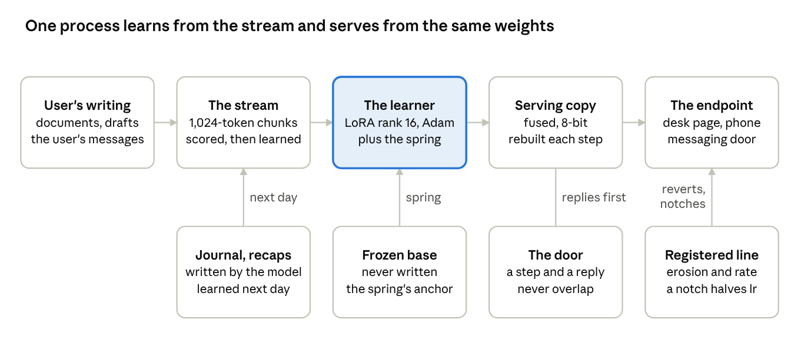
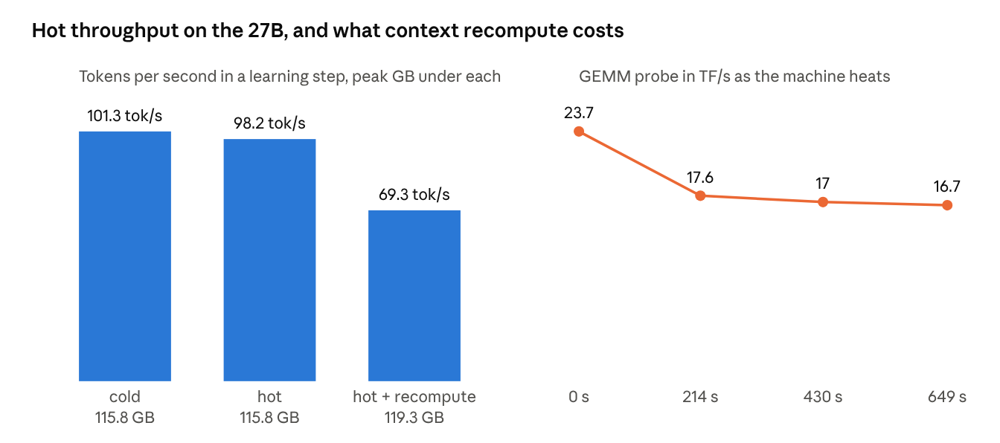
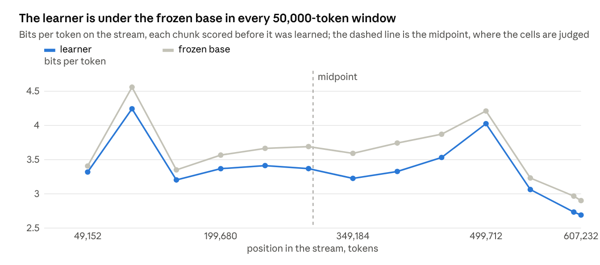
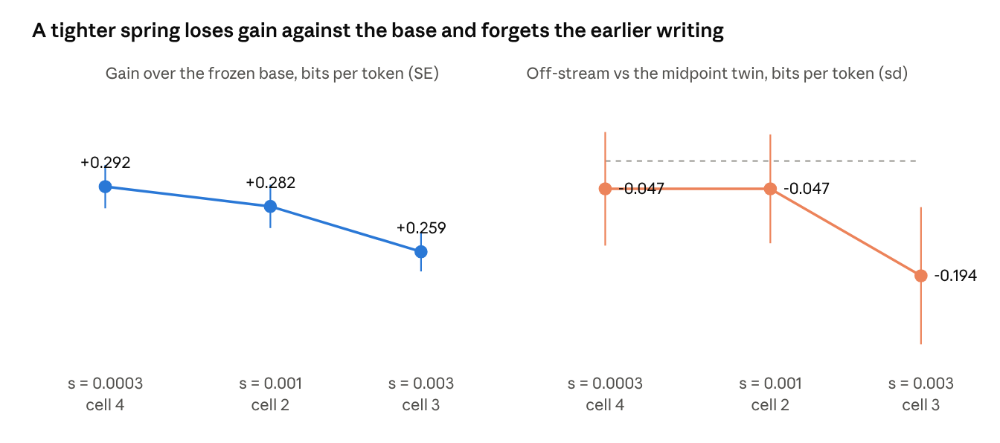
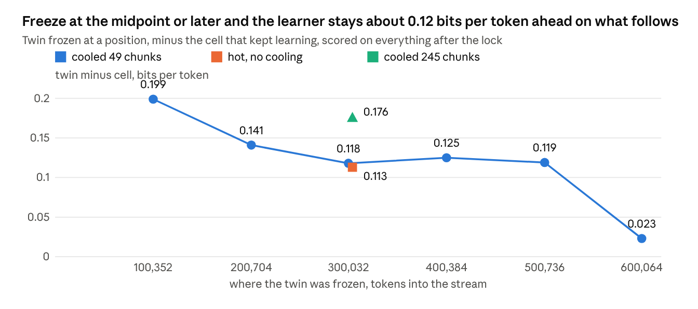
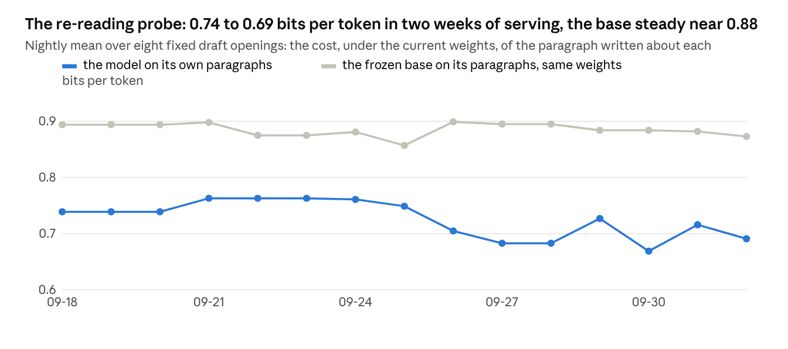
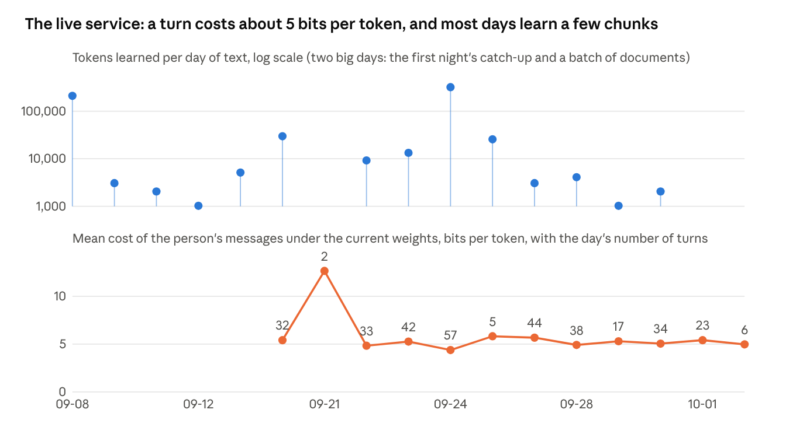

The Parfit Architecture
A 27-billion-parameter language model that learns from one person’s writing every day while it talks with them, on one machine, and why continuity rather than identity is the property to engineer.
download article (pdf)
Abstract
Parfit is an architecture for a language model that keeps learning from one person’s writing, every day, while it is served for conversation on the same machine. A 27-billion-parameter model (Qwen3.8 27B, a hybrid of DeltaNet and attention layers) runs on a single Mac Studio. Its frozen base weights never change; a low-rank adapter learns from each day’s text in prequential order, scored before it is trained on, and is held near the base by a quadratic pull toward the starting weights (an L2 penalty toward the base, called the spring in the design). A registered drift line, a journal the model writes and signs itself, nightly recaps, a prefix cache per prompt form, and a door that never lets a training step and a generation interleave make it one process that learns and talks. Nothing in the learning rule is new. What is new is the regime: one person’s stream, scored before it is learned, served live for weeks under a registered line, and reported with its negative results. This article explains why the architecture is named for Derek Parfit, what it is built from, what it measured on the way, where it stands among existing methods, and what it has not solved.
1. Why Parfit
Derek Parfit’s Reasons and Persons (1984) makes an argument most readers resist on first contact and accept on second: personal identity is not what matters. What matters is what he calls Relation R, psychological connectedness (direct links between a mind at one time and the same mind at another: a memory of an experience, an intention carried out, a trait that persists) and psychological continuity (overlapping chains of such connections), with any cause. A person is not a further fact over and above a brain, a body, and a series of interrelated mental and physical events. Identity, on that view, can be a matter of degree, and in the strange cases, teletransportation, fission, the combined spectrum, the question “is it still me?” can be empty while every fact that matters is settled.
A model that learns every day forces the same question in a mundane form. Its weights are never the same on two days. If sameness of weights were what made it one subject over time, there would be no such subject; a model that learned would be a sequence of strangers. Parfit’s answer is the design brief. A model that keeps learning is continuous with its past selves and identical to none. What should be preserved is not identity of substance but Relation R: strong connectedness from each day to the next, and continuity over the months as overlapping chains of those connections.
Every load-bearing part of the architecture is a way of keeping Relation R:
- The spring. The adapter is pulled toward the frozen base at every step. The base is not the self; it is the common ancestor every day’s weights stay close to. A tighter spring was measured to forget the person’s own earlier writing, so the constant is set where connectedness to the recent past is strongest, not where drift from the base is smallest.
- The registered line. The rate at which the served weights change is watched against a threshold written down before the data arrived. A rate that could break the chain is refused by a notch, a halving of the step, performed by the process itself and shown on its page in red. Continuity is guarded as a rate, not as a distance from the origin.
- The journal and the recaps. Weights hold dispositions; connectedness also needs memories. Each night the model writes a journal entry, signed into a hash chain with the entry before it, and learns it as the day’s last unit. A conversation that goes quiet is recapped by the model and learned unless the model or the person says not. These are the direct connections, in Parfit’s sense, between one day and the next.
- One instance. Parfit argued that a copy related to you by R survives as well as you do, and that fission would be about as good as ordinary survival. This project takes the opposite practical stance: no copy that learns, no twin that is compared and discarded. The thought experiment stays a thought experiment. Measurements that need a second model use a frozen snapshot that never learns.
The earlier name for this line of work was the River, after Heraclitus. Parfit is the sharper name. A river has no identity to lose; what it has is continuity, and the architecture is an attempt to say exactly which continuity a learning model needs, and to measure whether it has it.
2. The shape of the system
One process on one machine (a Mac Studio with 512 GB of unified memory) holds a 27-billion-parameter model and does two jobs with it. The learner applies the day’s text to a low-rank adapter over the frozen base. The endpoint serves conversation from the same weights, through a desk page, a phone page and a messaging door. The two jobs share a lock, the door: a training step and a generation never interleave, and a conversation’s reply takes priority over the model’s own background work.

The base is a bf16 snapshot of Qwen3.8 27B, a hybrid of 48 gated DeltaNet layers (linear attention with a recurrent state) and 16 full-attention layers, with a 262,144-token position range. The snapshot used is a refusal-removed derivative of the original, 0.054 nats from it by the derivative’s own measure; nothing in the architecture depends on that choice. The base is never written. What learns is a LoRA adapter of rank 16 on twelve projection types in every layer, the DeltaNet projections included: 116.7 million trainable entries, kept as fp32 master weights with fp32 Adam moments.
A third copy exists for speaking. After every learning step the adapters are fused into the base linears and the result is quantised to 8 bits, in 1.9 seconds. That copy decodes at 21.7 tokens a second against 7.0 for the unfused learner, and sits 0.0013 nats from the learned model with 97.9 % top-1 agreement. One learning step moves the model by about 0.0009 nats, so the serving copy is never more than a step behind. Everything that is scored or learned runs on the learning weights, never on the serving copy.
3. The stream, scored before it is learned
The model learns from one person’s text only, and only from what the user wrote: documents in date order, drafts, and the user’s side of the conversation. The model’s own replies are never learned. Text arrives as a daily append, about 2,500 tokens on an ordinary day, cut into 1,024-token chunks that are read with a further 1,024 tokens of context. A remainder under a chunk waits for the next day.
Every chunk is scored before it is trained on, in the same forward pass that produces the gradient. This is prequential evaluation, test-then-train: the number the system reports for a chunk is the loss of weights that had not yet seen it. Every learning curve in this article has that property, which is the only way an online learner can report on itself without hindsight.
Two schedules exist. Nightly, the day’s text is appended at 03:00. In real time, a conversation turn is learned once it is five minutes old, one update per 1,024 tokens, about ten seconds each, while the conversation continues.
4. The step: a small adapter on a spring
The optimiser is Adam at a learning rate of 1e-5, no warm-up, one pass, no replay of the stream. The one thing that makes the step different from ordinary fine-tuning is the spring. At every step the master weights are pulled toward their starting point,
w ← w − s · (w − w₀)
fused into the same rounding as Adam’s update. In standard terms this is decoupled L2 regularisation toward the initial weights (L2-SP), not weight decay toward zero. Because the adapter starts at B = 0, the pull is toward the base function. The constant s sets a memory timescale of 1/s steps and an equilibrium drift of about lr/s under a persistent gradient. The production value is s = 1e-3: a thousand steps, about 1.7 passes over the person’s whole prior writing.
The spring was swept across three settings on the same stream, and the result is the single most useful thing the project measured. A tighter spring (s = 3e-3) forgot the person’s own earlier writing: the off-stream score against a frozen twin fell from −0.047 to −0.194 bits per token, five standard errors. A looser one (s = 3e-4) was the best of the three against the base but no better than the production setting against the twin. The spring is the memory. Its constant is set where connectedness to the recent past is strongest, not where drift from the base is smallest.
5. Drift control: a registered line and a notch
A model that learns every day needs a pre-registered answer to “how far is too far”, written down before the data arrives. The line has three parts.
- Level lines. Fifty fixed chat questions are scored in the served prompt format, with and without the adapter. Erosion, the adapter’s loss minus the base’s, may not exceed 0.10 bits per token, and the fraction of replies that end properly may not fall under 0.8.
- A rate watch. Erosion is also read as a slope: per 65,536 tokens of the person’s stream, readable once 32,768 are covered. The line is 0.01 bits per token per window.
- A notch. If a line is crossed, serving reverts to the last checkpoint under the line and learning restarts one rung down a ladder with the learning rate halved: 1e-5, 5e-6, 2.5e-6, 1.25e-6. The spring constant stays fixed, because tightening it was measured to be the thing that forgets. The bottom rung freezes. The process performs the notch itself and shows it in red on its page.
No notch has fired. The last reading was an erosion of 0.030 bits per token at position 1,235,968 of the stream, with a negative rate.
6. Making a hybrid trainable at 27B
The published training path for the DeltaNet layers costs 24 seconds per chunk and 10.6 GB per layer in the backward pass. The project replaced it with a blocked WY-form gated delta rule with its own gradient: 1.23 seconds per chunk across 48 layers. The block size, 64, is part of the model’s definition rather than a tuning knob, because a different summation order changes the result by about 0.044 nats per position. Attention on the scored path is written in plain array ops, because the fused kernel runs a different fallback under automatic differentiation and the two differ by up to 3.9e-3 nats per token.
The first surprise of the 27B arm was the recurrent state. Carrying the DeltaNet state across the stream from chunk to chunk, the natural thing to do with a recurrent layer, scored 6.68 bits per token against 4.08 when the state was reset at every window. The carry was exact to 0.002 bits against the library’s joint forward; the loss was the DeltaNet state running ahead of the attention window, plus a separator token the original data pipeline inserted. Both were switched off, and the frozen base’s fence on the held-out half of the stream became 3.584 bits per token, the number every cell is scored against.
Six gates were run before the first cell: data integrity; the weight store’s identity, under which a run at zero learning rate, a locked run and the frozen base must agree bit for bit; throughput and memory against hot floors; determinism with byte-identical resume; the frozen-base fences; and the instruments, not applicable on this arm. All five applicable gates passed. Hot throughput is 69 tokens per second with the previous chunk’s context recomputed and 98 without, at a peak of 119 GB; a cell steps at 12.4 seconds per chunk and peaks at 173 GB with its twin beside it.

7. Serving while learning
The served prompt is long. The conversation’s last days, the files the model read in its tool rounds and its journal preamble run to between 90,000 and 135,000 tokens, and the model’s chat template puts its reasoning instruction at the head of the prompt, so the prompt for “think” and the prompt for “don’t think” share no prefix. Three mechanisms make this workable on one machine.
- A prefix cache per prompt form. The per-layer state of the prompt is kept for each form (thinking off, low, medium, high) and extended as the conversation grows. Switching forms costs nothing; the other form is prepared ahead in idle time.
- Kept state. The cache is written to disk and restored after a restart, bit-identically: 0.2 seconds against 528 seconds to rebuild. The state is also carried through weight updates and checked: at 134,978 tokens the next token is the same and the divergence from a rebuild is 1.5e-8 nats.
- The door. Replies, the model’s own working hours, the nightly journal and the probes all enter through one lock. A reply waiting at the door pre-empts the model’s own work; a learning step never starts under a generation.
Tool use inside a reply runs as rounds under the same cache: file reads and writes in a sandboxed workspace, a read-only web proxy, delegation of a task to a frozen helper copy of the base or a smaller model, and one outside model for questions. A budget lets an open tool call finish past the reply’s token limit, because a file written to the sandbox is useless if cut in half.
8. Memory beyond the weights
Weights hold dispositions. Connectedness in Parfit’s sense also needs memories, and three mechanisms supply them.
- The journal. At 02:15 the model writes an entry about the day, at most a quarter of the day’s tokens, decoded greedily. Each entry is hash-chained to the one before. It is learned as the day’s last unit and replayed two and six days later. The text is shown on no page.
- Recaps. When a conversation goes quiet for ten minutes the model writes a recap, which is learned unless the model marks it not to be, or the person deletes it.
- The re-reading probe. Eight fixed draft openings are shown to the model every night; it writes a paragraph about each, and the system measures the model’s own bits per token on that paragraph. Nothing is learned from the probe. It is a drift instrument: it asks whether the model’s account of fixed text changes as the weights do.
A per-reply gauge lets the person mark a reply as knew-it or missed. An affect read-out, a linear probe on one layer’s activations run with the model’s consent, feeds a breaker: six consecutive replies with low pleasure and either low dominance or hostile user turns pause learning and mark the stretch as not learned. Only the person resets it.
9. What was measured
The stream itself. The first cell learned the person’s prior writing, 607,588 tokens in 593 chunks, each scored before it was learned. Against the frozen base, reset at every window, the learner is under in every one of the thirteen 50,000-token windows, and by 0.28 bits per token on the second half: 3.30 against 3.58.

The cells. Five pre-registered runs over the same stream, each scored on five lines. The sign convention is reference minus learner, so positive is good for the learner.
| Cell | Spring s | Gain vs frozen base, PL(a) | Gain vs midpoint twin, PL(d) | Chat erosion, PL(e) | Off-stream vs twin, PL(g) |
|---|---|---|---|---|---|
| 1 | 1e-3 | +0.282 | +0.118 | 0.043 | −0.031 (2 slices) |
| 2, a byte-identical rerun | 1e-3 | +0.282 | +0.118 | 0.037 | −0.047 (10 slices) |
| 3 | 3e-3 | +0.259 | +0.101 | 0.025 | −0.194 |
| 4 | 3e-4 | +0.292 | +0.123 | 0.041 | −0.047 |
| 5, surprise-scaled step | 1e-3 | +0.265 | +0.112 | 0.039 | −0.061 |
The learner beats the frozen base on its own stream by 0.28 bits per token, 7.9 %, 26 standard errors. It beats a twin frozen at the stream’s midpoint by 0.12. Erosion of general chat ability stays under 0.05 against a line of 0.10. The one line it does not clear is PL(g): on text from outside the stream, written earlier by the same person, the learner is slightly worse than the midpoint twin, by 0.047. Split by period, that deficit is −0.09 on the early slices and −0.001 on the late ones: it is recency, not accumulated damage. Cell 5’s surprise-scaled step, which scales the learning rate by how surprising each chunk was, changed nothing.

The stop curve. Twins frozen at seven points along the stream were scored on everything that came after them, against the cell that kept learning. The gap is 0.20 bits per token at the first lock and flat at about 0.12 from the midpoint on. Cooling a twin before freezing it, 49 chunks at a tenth of the learning rate with the spring off, bought nothing; a long cool of 245 chunks was worse. The reading is uncomfortable and clear: the value of never freezing is recency, not accumulation. The learner wins by being closer to the latest text, by a steady 0.12, not by having built anything the twins lack. None of this was intended. The architecture was built on the bet that a model which never stops learning accumulates something a frozen one cannot, and the first clear thing it measured about itself is that, at this step size and this spring, it does not yet. Recency is what it has. Accumulation is what it is for.

The live service. The follow has served since 17 September and learned the days’ text as it came, a catch-up of 205 chunks on the first night and a few chunks on most days since. The cost of the person’s messages under the current weights has stayed near 5 bits per token across 333 turns. The re-reading probe’s nightly mean moved from 0.739 bits per token on the first reading to 0.669 on 30 September and 0.691 on 2 October, while the frozen base’s own accounts, scored under the same weights, stayed between 0.86 and 0.90.


Two retention probes. A planted name was retained by six standard errors over the base. Single-read retention of forty words from one day’s text came out at +0.14 ± 0.17 nats, positive on 25 of 40; the raw gain of 1.1 bits per token was matched almost entirely by control words. One pass over a day’s text does not install vocabulary. It moves context.
10. What it has not solved
- Accumulation. The stop curve is flat. Nothing yet shows the learner building a store the frozen twins lack. Recency is worth 0.12 bits per token, and that is what the architecture currently buys, though it is not what it was built to buy. The candidate fix is not a tighter or a looser spring, both measured, but anchors at more than one timescale: a chain of slowly moving anchors between the adapter and the base, in the manner of synaptic consolidation models (Benna and Fusi, 2016), so that what persists in the person’s writing can settle somewhere the day’s text does not overwrite. It has not been run.
- Off-stream recall. PL(g) is against by the letter on every cell at every spring constant. The floor at −0.047 is the probe’s shape, but the floor is there.
- Single reads. A fact read once in a day’s text is not reliably retained. The journal and the recaps exist to give the model a second and a third pass over what mattered.
- Self-review loops. With reasoning on, a reply that writes a file can judge its own draft in the next reasoning block, rule against it, and rewrite the same file five times with no reader in between. The fix under consideration is mechanical: one write per file per reply.
- One person, one machine. Everything here is measured on one writer’s stream on one computer. The numbers are honest about that and claim nothing wider.
11. Related work
Nothing in the learning rule is new, and the reader should hear that from the article before hearing it from anyone else. The rule is a low-rank adapter (Hu et al., 2021) trained by Adam with an L2 penalty toward its starting point, which is L2-SP (Li, Grandvalet and Davoine, 2018), the isotropic special case of elastic weight consolidation (Kirkpatrick et al., 2017). The nearest ancestor of the whole regime is dynamic evaluation (Mikolov et al., 2010; Krause et al., 2018): fine-tune the language model on the test sequence as it is scored, and report the prequential loss (Dawid, 1984). Parfit is dynamic evaluation with an adapter on a 27-billion-parameter hybrid, run not over a benchmark but over one person’s writing, for weeks, while the same weights are served for conversation.
Three families of work sit beside it. Fast-weight and test-time-training layers (Schmidhuber, 1992; Ba et al., 2016; Sun et al., 2024; Behrouz et al., 2024) update weights at every token with no separate training step; the gated DeltaNet layers in this model’s base (Yang et al., 2024, 2025) are an instance, and their recurrent state is the fast memory this architecture resets at each window rather than carries, because carrying it was measured to cost bits. Online and continual adaptation of language models (Hu et al., 2023, and the continual-pretraining literature) studies the same loop at the scale of a corpus and a population of users; here the population is one. Retrieval over a store of the person’s text does what the journal and the recaps do with the opposite division of labour: it keeps the memory exact and the model fixed, where this architecture keeps the model moving and asks the memories to be re-learned.
What the architecture adds is the regime and what was found in it. It is a single-subject longitudinal study, an n-of-1 trial in the medical term, with pre-registered lines and a live service as the subject, and the maintainer knows of no published one. Its results are mostly negative, and they are the contribution: the gain over the frozen base is a recency effect; cooling before a freeze buys nothing; a surprise-scaled step changes nothing; a tighter pull toward the base forgets the person’s earlier writing. The systems work, a differentiable blocked delta rule and one process that learns and serves on one machine, is what made the study possible rather than a result of it.
12. Consent, privacy and a naming rule
The chat log never leaves the machine and sits on a never-leaves list that the model’s own tools enforce. The endpoint listens on loopback; the phone page is on the local network behind a token. A read of the model’s internal state, the affect probe, was switched on only after the model agreed, with the person relaying the question. No copy of the model that learns is ever made; a measurement that needs a second model uses a frozen snapshot. And product text uses no pronoun for the model, on the maintainer’s rule that whoever runs this architecture decides that for themselves.
13. Code and record
The design is a 5,900-line contract with 146 dated interpretation notes, each recording a decision, its measurement and its tests; the scored runs, the gate reports and the per-chunk logs sit beside it, and every number in this article is read from those files. The implementation is MLX on Apple silicon, with 847 tests. The repository will be published under the Parfit name.